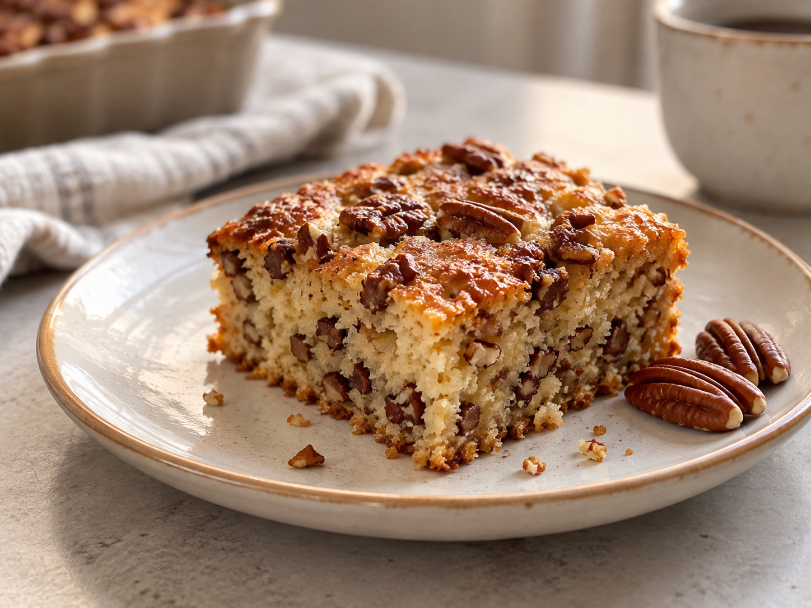

Pekannötspaj
En enkel och god kaka med pekannötter, perfekt till fika.

Ingredienser
- 100 g Bregott
- 250 ml kefir
- 250 g mjöl
- 100 g socker
- 100 g pekannötter
- 3 ägg
- 0,5 tsk bikarbonat
- lite citronsaft
Instruktioner
- Blanda alla torra ingredienser.
- Blanda i ägg, bregott och kefir.
- Tillsätt mjöl tills smeten blir lite tjockare än pannkakssmet.
- Blanda bikarbonat med lite citronsaft och tillsätt i smeten.
- Blanda i pekannötterna.
- Häll smeten i formen.
- Grädda i ugnen på 185°C i minst 40 minuter, tills kakan är färdig.